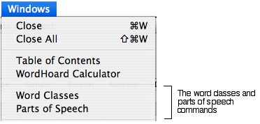
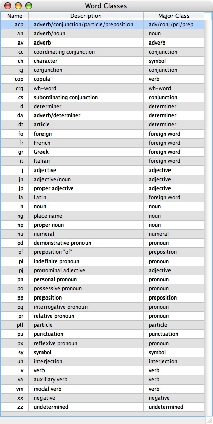
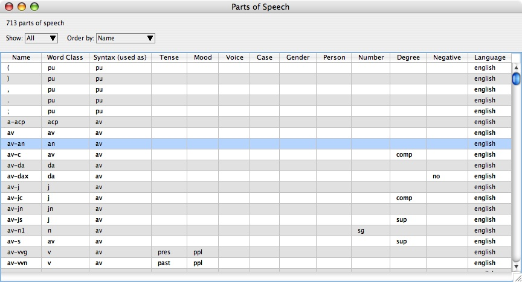
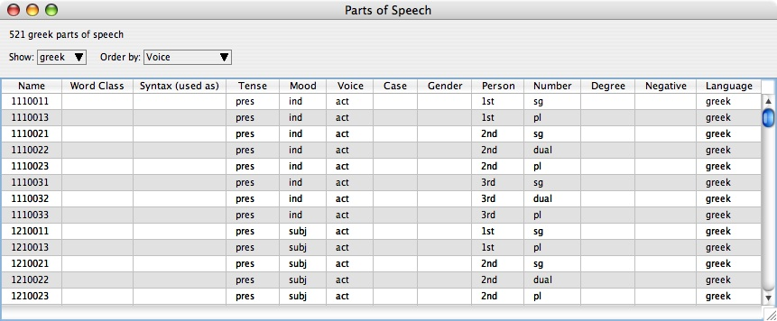

|
|
|
WordHoard uses a morphology tagset named "NUPOS". To get information about the word class and part of speech tags in NUPOS, use the commands in the "Windows" menu:

The word classes are shown in full below.

Each word class belongs to one of 18 major word classes, which for the most part should be self-explanatory. Some of them are used only for English language texts, and some of them are used only for Greek language texts.
| Major Word Class | English | Greek |
|---|---|---|
| adjective | x | x |
| adv/conj/pcl/prep | x | |
| adverb | x | x |
| conjunction | x | x |
| determiner | x | x |
| foreign word | x | |
| interjection | x | x |
| negative | x | x |
| noun | x | x |
| numeral | x | x |
| particle | x | |
| preposition | x | x |
| pronoun | x | x |
| punctuation | ||
| symbol | x | |
| undetermined | ||
| verb | x | x |
| wh-word | x |
We do not currently use the "punctuation" major word class in WordHoard. This class is reserved for possible future use to mark up punctuation in texts.
The "undetermined" major word class is only used during development. In a production deployment of WordHoard, it is unused.
These major word classes are subdivided into a slightly finer categorization by "word class". There are 43 word classes in NUPOS. As with the major word classes, some word classes are used only for English, some are used only for Greek, and some are currently unused.
Note that each word class has a very short string which provides a name for the word class, and that each word class belongs to one and only one of the major word classes.
For example, for the major word class "verb", there are four word classes "cop" (copula), "va" (auxiliary verb), "vm" (modal verb), and "v" (verb). So in NUPOS there are four kinds of verbs. "cop" is only used in Greek, "va" and "vm" are only used in English, and "v" is used in both languages.
The parts of speech window shows a table in the following format:

By default, all the parts of speech are shown in the table, first the English ones and then the Greek ones. To show only the English ones or only the Greek ones, use the "Show" popup menu. To order the parts of speech by the values of one of the categories, use the "Order by" popup menu.
For example, the following pictures shows the Greek parts of speech ordered by voice:

Unlike the word classes, in NUPOS the English and Greek parts of speech are separate. Each part of speech is used by English or by Greek, but no part of speech is used by both languages. The English parts of speech have short alphabetic names. The Greek parts of speech have short numeric names derived from the category values.
NUPOS has a fine-grained part of speech tagset, much finer-grained than the word classes and major word classes. There are 192 total English parts of speech and 521 total Greek parts of speech in the current version of NUPOS.
For English. each part of speech belongs to one and only one word class, so the English part of speech tagset represents a finer grained subdivision of the word class tagset, in the same way that the word class tagset represents a finer grained subdivision of the major word class tagset.
For Greek, the parts of speech do not belong to any particular word class, so the Greek part of speech tagset is not a subdivision of the word class tagset.
To continue the example of English verbs, in NUPOS each of the verb word classes contains a number of parts of speech:
For both English and Greek, each part of speech is characterized by, and is largely defined by, how it is used in various grammatical categories. These categories and their possible values should be mostly self-explanatory to those familiar with English and Greek grammar.
The following categories are not used in Greek: Syntax, Degree, and Negative.
The following categories are not used in English: Voice and Gender.
As an example, the NUPOS English part of speech "vmd2" is used for modal verbs used in the second person singular past tense. It has the following attributes in addition to its name "vmd2":
An example of this part of speech occurs in Act 5, Scene 1 of Hamlet, where Gertrude says "I hoped thou shouldst have been my Hamlet's wife;" In this passage, the word "shouldst" is tagged with the lemma "shall (vm)" and the part of speech "vmd2". By virtue of this tagging, we know all of the following facts about this word:
The "syntax" attribute is used to specify how the part of speech is used. For example, the part of speech "av-j" is used for adjectives that are used as adverbs. The "syntax" attribute of this part of speech is "av". An example of this part of speech occurs in Act 1, Scene 1 of Hamlet, where Bernardo says "Long live the king!" The word "Long" in this passage in used as an adverb modifying the verb "live" and has the NUPOS part of speech "av-j". Contrast this with the word "long" in Act 3, Scene 1, where Hamlet says "That makes calamity of so long life;". In this passage, the word "long" is tagged with the part of speech "j", the part of speech for "normal" uses of adjectives. Both of the parts of speech "av-j" and "j" have the word class "j" and major word class "adjective", but "av-j" has the syntax attribute "av", while "j" has the syntax attribute "j".
|
|
|